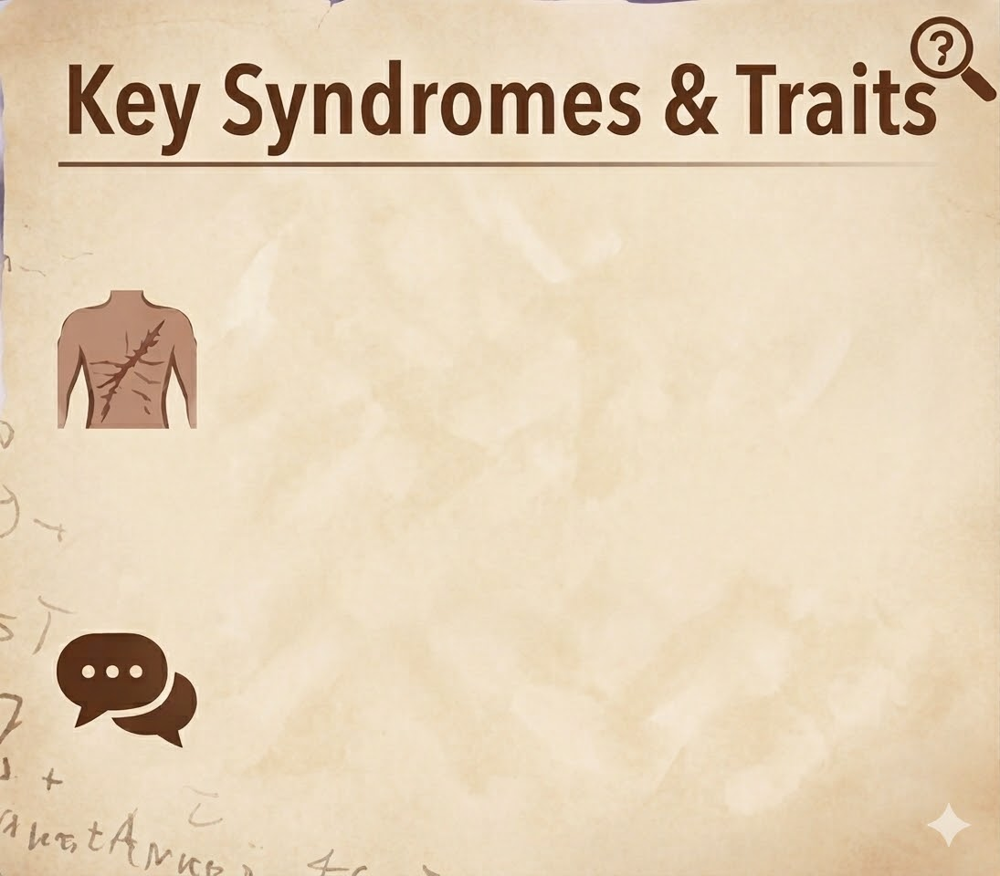
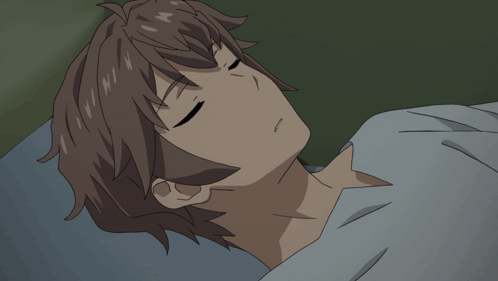
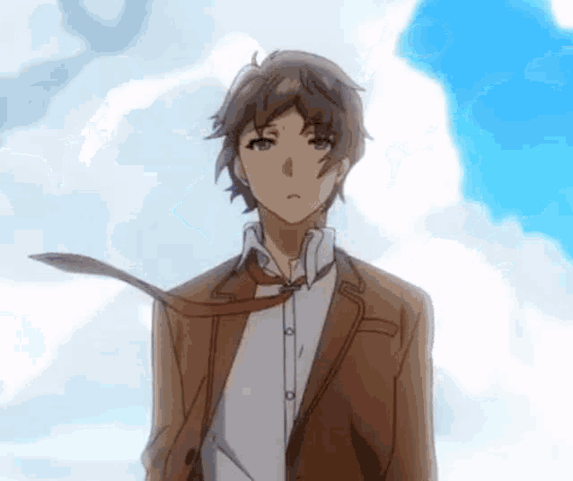
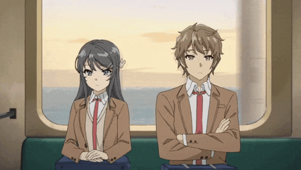
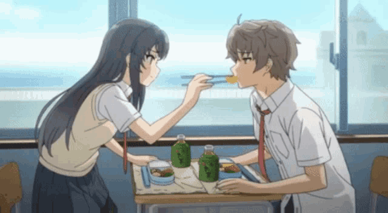

Sakuta Azasagawa
The Rascal Who Rewrote Atmosphere

Sakuta Azusagawa, a second-year high school student, is infamous for a “hospitalization incident.” Beneath his deadpan humor lies a deep empathy, which draws him into encounters with Adolescence Syndrome—metaphysical phenomena triggered by social and emotional stress. His nonchalance towards social atmosphere makes him uniquely suited to help others

Hospital Scarring: Physical scras from a previous manifestation.
Atmospehere-Proof(Trait):The rare ability to ignore social pressure and act boldly

- Anime: Rascal does not dream of bunny girl senpai.
- Grade: 2nd Year
- Partner: Sakurajima Mai
- Known For: Selflessness, blunt, honesty, big balls
- Goal: Protect Mai and help his friends



